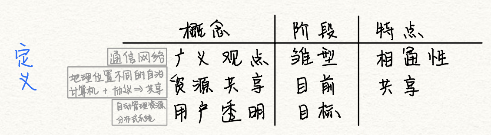
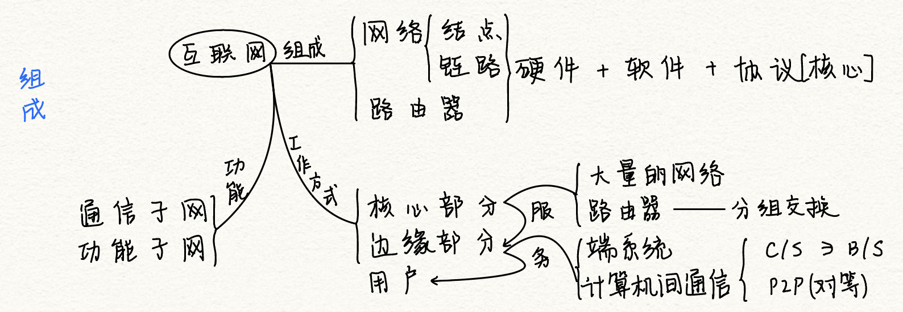
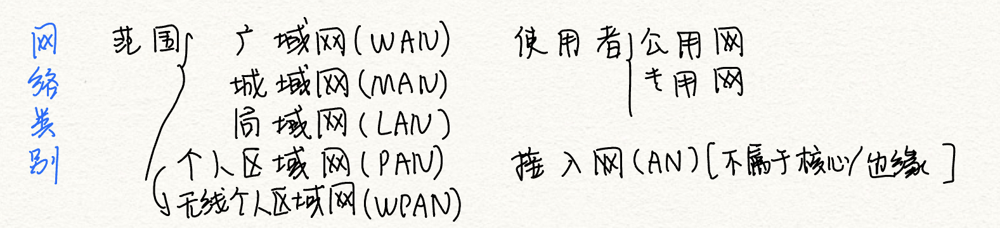
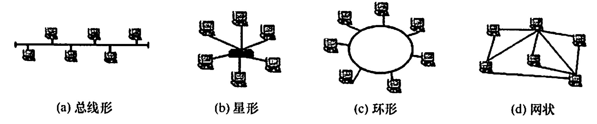
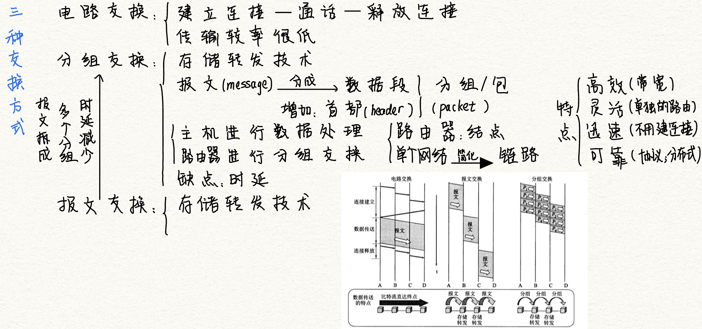
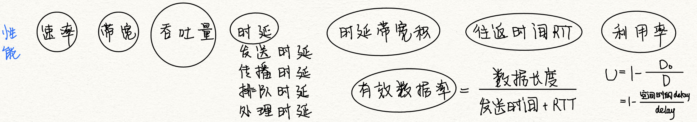

计算机网络概述
2022.6.09
计算机网络的概念

广义观点：可以进行远程信息处理，进一步达到资源共享
资源共享观点：
- 目的：资源共享
- 组成单元：不同地理位置的自治计算机
- 统一规则：网络协议
用户透明观点：存在“网络操作系统”，用户使用网络就像使用一台超级计算机
计算机网络的组成

- 组成：硬件+软件+协议
- 工作方式：边缘+核心
- 功能：通信子网+资源子网
计算机网络的功能
- 数据通信：最基本
- 资源共享：可以是软件共享也可以是硬件共享
- 分布式处理：复杂任务给别的计算机
- 提高可靠性：网络中计算机互为替代机
- 负载均衡：工作均衡的分给各个计算机
计算机网络的分类

按范围
- 广域网WAN：也叫远程网，采用交换技术
- 城域网MAN：多采用以太网技术
- 局域网LAN：采用广播技术
- 个人区域网PAN
按传输技术
- 广播式网络：共享信道；局域网使用广播式网络；广域网的无线、卫星也是广播式网络
- 点对点网络
- 主要区别是，是否采用存储转发和路由机制
按拓扑结构
- 按网络的拓扑结构，主要分为总线形、星形、环形和网状网络
- 星形、总线形和环形网络多用于局域网，网状网络多用于广域网。

按交换技术

计算机网络的性能指标
